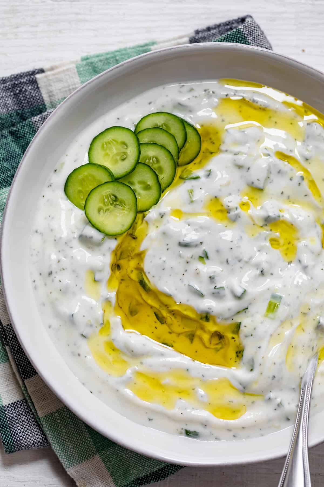

Home
Cucumber Yogurt Cream

Description
Ingredients
- 2 large cucumbers(about 1 pound), peeled and seeded
- 1 teaspoon kosher salt
- 1 1/2 cups full-fat Greek-style yogurt
- 3 tablespoons extra-virgin olive oil
- 2 tablespoons fresh mint, finely chopped
- Freshly ground black pepper
Steps
- Using the large holes on a box grater, grate the cucumbers
- Transfer to a colander and sprinkle with salt.
- Let stand for 10 minutes, then gengly squeeze handfuls of grated cucumber to remove excess liquid and transfer to the bowl of a food processor
- Add the yogurt and olive oil and process to combine
- Transfer to a serving bowl and stir in the mint. Season to taste with salt and pepper